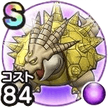

スナノサウルス
砂漠といにしえの神殿こころ最大コスト+4じゅもんダメージ+3%ヒャド属性じゅもんダメージ+5%ギラ属性じゅもんダメージ+5%攻撃減耐性+5%守備減耐性+5% / 6.0点
くわしい特徴
【ランク特殊効果】 こころ最大コスト+4じゅもんダメージ+3%ヒャド属性じゅもんダメージ+5%ギラ属性じゅもんダメージ+5%攻撃減耐性+5%守備減耐性+5%

砂漠といにしえの神殿こころ最大コスト+4じゅもんダメージ+3%ヒャド属性じゅもんダメージ+5%ギラ属性じゅもんダメージ+5%攻撃減耐性+5%守備減耐性+5% / 6.0点
【ランク特殊効果】 こころ最大コスト+4じゅもんダメージ+3%ヒャド属性じゅもんダメージ+5%ギラ属性じゅもんダメージ+5%攻撃減耐性+5%守備減耐性+5%